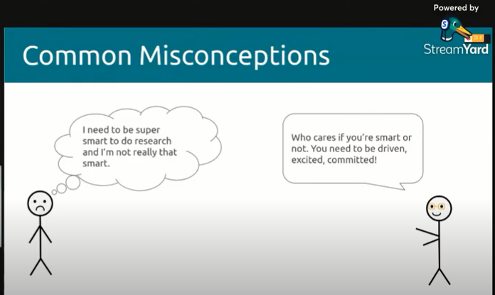
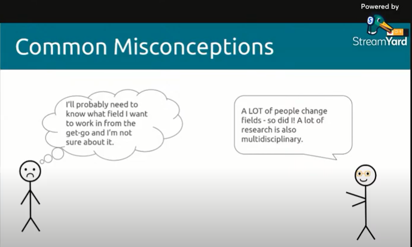
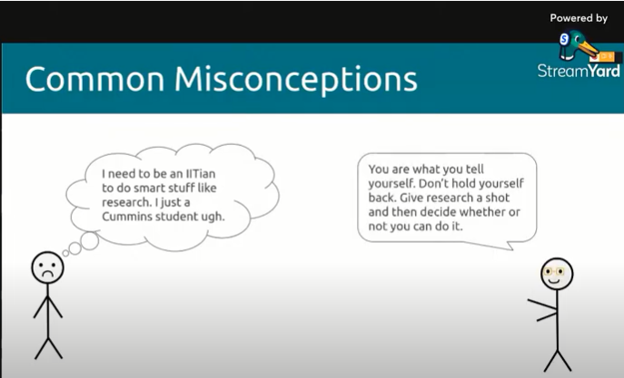
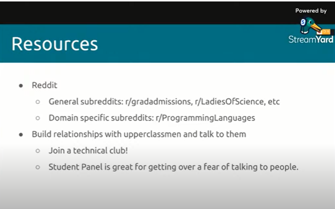

AICVS conducted a webinar on 16th October 2021 on ‘Undergrad Research and Applying to PhD Programs’ by Michelle Davis Thalakottur. Michelle is a recent graduate of computer engineering department in Cummins College of Engineering for Women and currently a Computer Science PhD student at Northeastern University where she works on research problems in web assembly. As an undergraduate, she has pursued research internships at IIT Bombay (on compiler generation and data flow analysis) and at IIT Patna (on Dimensionality Reduction and Metric Learning).She has even worked on her BTech project at IIT Bombay on the topic of Formalization of Translation performed by SCLP Complier phases.
What is Research?
This is a very hard question which can take hours to answer. Michelle recommends some talks to look at (What is research by Uday Khedkar and You and your research by Richard Hamming) to gain more insight. Michelle says for her, research is about learning and original thinking, and pushing the boundaries of human innovation at its purest.
Why you should consider Research?
It is very useful in campus placements. The ability to do research shows that you have an ability to learn new concepts deeply, apply them and present it. This is something that you could definitely talk about in an interview and people would be excited to hear it. However, it won’t ensure you a job as a Software Engineer. Research and Software Engineering are both different fields.
On the other side, if you want to pursue further studies like Masters or PhD program, then these admission committees value research experience. PhD programs value it a lot more than Masters programs and the more competitive the program is, the more they value the experience generally. Michelle recommends looking at other student profiles to gain more insight on the admission processes and the related student’s research experience.
Common misconceptions in Research:
#1:

#2:

#3:

Can I do an independent research where I don’t have a professor advising me?
Though you can pursue an independent undergrad research but there is a lot to gain when you have a professor to guide you. Good professors are worth their weight in gold. Do chase opportunities to learn from these fantastic people. It is a great way to try out research and see if it fits you or not!
How do you ‘do’ a research internship?
Part A:
Before applying:
Pick a domain that you're interested in and dive right in.
Explore anything and everything that seems interesting to you.
Try out different websites, books, courses to find out your interest.
Build projects.
As an undergrad, it is a great time for you to try stuff out.
Part B:
Applying:
Here, learning outcomes matter much more than your CGPA.
Michelle suggests talking to your professors about the research and domains you are interested in.
Try to build up a personal relationship with these professors.
Also, ask them about any active research going on in your interested domain and if they can refer you to the researcher.
This is the recommended approach by Michelle. Another approach is sending cold email.
If you want to cold email a professor, do not just email them your CV and CGPA.Rather than that, visit their website and read their research papers.
You can email them your questions or a specific problem that you would like to work on. That way, it is much easier for professors to respond to your mail.
Then, ask them about research internships. Be prepared to send a lot of emails! Be prepared to get rejected a lot! Another approach is to apply for research programs.
Part C:
After applying:
If you get in early, ask them if you can start working as soon as possible.
Do believe in yourself.
Fight for good work if it’s necessary.
Focus on your work.
If quality of your work is good, you might get an opportunity to publish a paper!
What if I don’t get an internship?
Keep trying and know that everyone goes through this disappointment.
It is ok, you are not stupid or anything else just because you didn’t get an internship.
Still keep trying and if nothing else works, pick a topic you want to explore and do an independent project.
In the meantime, it would be worthwhile thinking about what you can improve on in your search process.
You can still look into a research project for your BTP (BTech project).
Do not fear failure but rather fear not trying.
If you feel isolated, have no one to share your research interest with, and thus, are looking for a research community, Twitter is a great place for it!
Resources
Some recommended resources:

Cheers,
Michelle Thalakottur